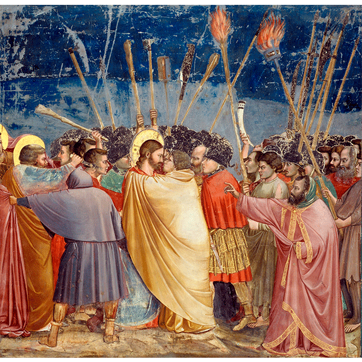
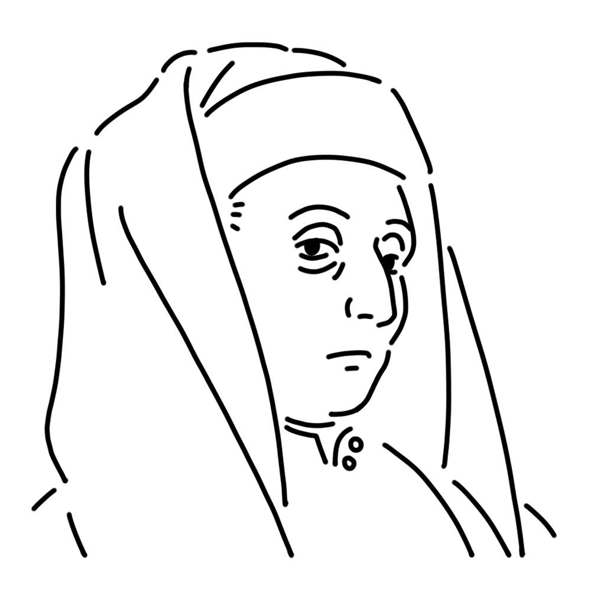

Although she is particularly small among the muses, she is a great muse who is a pioneer of Renaissance art and is also known as the "father of Western painting." She is always considerate and has a joke to share, and is popular with everyone. She is said to carry a silver coin in a pouch around her waist.
Republic of Florence (present-day Italy)
"Kiss of Judas"
"Ognissanti Madonna"
"Giotto's Campanile" etc.

This is one of the murals in the Scrovegni Chapel in Italy. It depicts the scene in which the traitor Judas kisses a Jewish priest who is trying to arrest Jesus, revealing his identity as Christ. The realistic composition and human portrayal of the characters set it apart from the inorganic religious art of the time, and it signals the dawn of the Renaissance.
Year
1304-1306
Medium
Fresco
Dimension
200cm x 185cm
Collection
Scrovegni Chapel (Italy)

A leading artist of the Gothic period preceding the Renaissance. As a medieval figure, few records remain, yet his religious paintings—remarkably expressive for their time—reveal the budding seeds of Renaissance art. He himself is said to have been a man of great humor, and anecdotes abound, including the famous tale of “Giotto's Circle,” where he drew a perfect circle to prove his skill to the papal envoy.
Giotto di Bondone
Around 1267
January 8, 1337(aged ???)